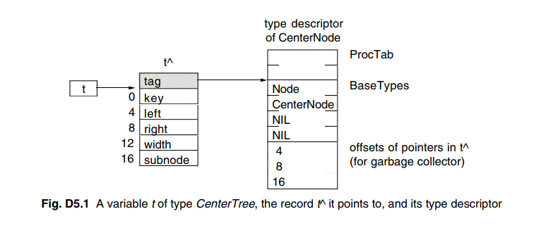

Type extension makes Oberon-2 an object-oriented language. An object is a variable of an abstract data type consisting of private data (its state) and procedures that operate on this data. Abstract data types are declared as extensible records. Oberon-2 covers most terms of object-oriented languages by the established vocabulary of imperative languages in order to minimize the number of notions for similar concepts.
This report is not intended as a programmer's tutorial. It is intentionally kept concise. Its function is to serve as a reference for programmers, implementors, and manual writers. What remains unsaid is mostly left so intentionally, either because it can be derived from stated rules of the language, or because it would require to commit the definition when a general commitment appears as unwise.
Appendix A defines some terms that are used to express the type checking rules of
Oberon-2. Where they appear in the text, they are written in italics to indicate
their special meaning (e.g. the same type).
2. Syntax
An extended Backus-Naur Formalism (EBNF) is used to describe the syntax of
Oberon-2: Alternatives are separated by |. Brackets [ and ] denote optionality of
the enclosed expression, and braces { and } denote its repetition (possibly 0
times). Non-terminal symbols start with an upper-case letter (e.g. Statement).
Terminal symbols either start with a lower-case letter (e.g. ident), or are
written all in upper-case letters (e.g. BEGIN), or are denoted by strings (e.g.
":=").
3. Vocabulary and Representation
The representation of (terminal) symbols in terms of characters is defined using
the ASCII set. Symbols are identifiers, numbers, strings, operators, and
delimiters. The following lexical rules must be observed: Blanks and line breaks
must not occur within symbols (except in comments, and blanks in strings). They
are ignored unless they are essential to separate two consecutive symbols.
Capital and lower-case letters are considered as distinct.
$ ident = letter {letter | digit}.
Examples:
x
Scan
Oberon2
GetSymbol
firstLetter
A real number always contains a decimal point. Optionally it may also contain a decimal scale factor. The letter E (or D) means "times ten to the power of". A real number is of type REAL, unless it has a scale factor containing the letter D. In this case it is of type LONGREAL.
$ number = integer | real.
$ integer = digit {digit} | digit {hexDigit} "H".
$ real = digit {digit} "." {digit} [ScaleFactor].
$ ScaleFactor = ("E" | "D") ["+" | "-"] digit {digit}.
$ hexDigit = digit | "A" | "B" | "C" | "D" | "E" | "F".
$ digit = "0" | "1" | "2" | "3" | "4" | "5" | "6" | "7" | "8" | "9".
Examples:
1991 INTEGER 1991
0DH SHORTINT 13
12.3 REAL 12.3
4.567E8 REAL 456700000
0.57712566D-6 LONGREAL 0.00000057712566
character = digit {hexDigit} "X".
$ string = ' " ' {char} ' " ' | " ' " {char} " ' ".
Examples:
"Oberon-2"
"Don't worry!"
"x"
+ := ARRAY IMPORT RETURN
- ^ BEGIN IN THEN
* = BY IS TO
/ # CASE LOOP TYPE
~ < CONST MOD UNTIL
& > DIV MODULE VAR
. <= DO NIL WHILE
, >= ELSE OF WITH
; .. ELSIF OR
| : END POINTER
( ) EXIT PROCEDURE
[ ] FOR RECORD
{ } IF REPEAT
The scope of an object x extends textually from the point of its declaration to the end of the block (module, procedure, or record) to which the declaration belongs and hence to which the object is local. It excludes the scopes of equally named objects which are declared in nested blocks. The scope rules are:
$ Qualident = [ident "."] ident. $ IdentDef = ident [" * " | " - "].The following identifiers are predeclared; their meaning is defined in the indicated sections:
ABS (10.3) LEN (10.3)
ASH (10.3) LONG (10.3)
BOOLEAN (6.1) LONGINT (6.1)
CAP (10.3) LONGREAL (6.1)
CHAR (6.1) MAX (10.3)
CHR (10.3) MIN (10.3)
COPY (10.3) NEW (10.3)
DEC (10.3) ODD (10.3)
ENTIER (10.3) ORD (10.3)
EXCL (10.3) REAL (6.1)
FALSE (6.1) SET (6.1)
HALT (10.3) SHORT (10.3)
INC (10.3) SHORTINT (6.1)
INCL (10.3) SIZE (10.3)
INTEGER (6.1) TRUE (6.1)
$ ConstantDeclaration = IdentDef "=" ConstExpression. $ ConstExpression = Expression.A constant expression is an expression that can be evaluated by a mere textual scan without actually executing the program. Its operands are constants (Ch.8) or predeclared functions (see 10.3) that can be evaluated at compile time. Examples of constant declarations are:
N = 100
limit = 2*N - 1
fullSet = {MIN(SET) .. MAX(SET)}
$ TypeDeclaration = IdentDef "=" Type.
$ Type = Qualident | ArrayType | RecordType | PointerType
| ProcedureType.
Examples:
Table = ARRAY N OF REAL
Tree = POINTER TO Node
Node = RECORD
key: INTEGER;
left, right: Tree
END
CenterTree = POINTER TO CenterNode
CenterNode = RECORD (Node)
width: INTEGER;
subnode: Tree
END
Function = PROCEDURE(x: INTEGER): INTEGER
BOOLEAN the truth values TRUE and FALSE
CHAR the characters of the extended ASCII set (0X .. 0FFX)
SHORTINT the integers between MIN(SHORTINT) and MAX(SHORTINT)
INTEGER the integers between MIN(INTEGER) and MAX(INTEGER)
LONGINT the integers between MIN(LONGINT) and MAX(LONGINT)
REAL the real numbers between MIN(REAL) and MAX(REAL)
LONGREAL the real numbers between MIN(LONGREAL) and MAX(LONGREAL)
SET the sets of integers between 0 and MAX(SET)
Types 3 to 5 are integer types, types 6 and 7 are real types, and
together they are called numeric types. They form a hierarchy; the larger
type includes (the values of) the smaller type:
LONGREAL >= REAL >= LONGINT >= INTEGER >= SHORTINT
$ ArrayType = ARRAY [Length {"," Length}] OF Type.
$ Length = ConstExpression.
A type of the form
ARRAY L0, L1, ..., Ln OF T
is understood as an abbreviation of
ARRAY L0 OF
ARRAY L1 OF
...
ARRAY Ln OF T
Arrays declared without length are called open arrays. They are restricted
to pointer base types (see 6.4), element types of open
array types, and formal parameter types (see 10.1).
Examples:
ARRAY 10, N OF INTEGER
ARRAY OF CHAR
$ RecordType = RECORD ["("BaseType")"] FieldList {";" FieldList} END.
$ BaseType = Qualident.
$ FieldList = [IdentList ":" Type ].
Record types are extensible, i.e. a record type can be declared as an extension
of another record type. In the example
T0 = RECORD x: INTEGER END
T1 = RECORD (T0) y: REAL END
T1 is a (direct) extension of T0 and T0 is the
(direct) base type of T1 (see App. A). An
extended type T1 consists of the fields of its base type and of the fields
which are declared in T1. All identifiers declared in the extended record
must be different from the identifiers declared in its base type record(s).Examples of record type declarations:
RECORD
day, month, year: INTEGER
END
RECORD
name, firstname: ARRAY 32 OF CHAR;
age: INTEGER;
salary: REAL
END
$ PointerType = POINTER TO Type.If p is a variable of type P = POINTER TOT, a call of the predeclared procedure NEW(p) (see 10.3) allocates a variable of type T in free storage. If T is a record type or an array type with fixed length, the allocation has to be done with NEW(p); if T is an n-dimensional open array type the allocation has to be done with NEW(p, e0, ..., en-1) where T is allocated with lengths given by the expressions e0, ..., en-1. In either case a pointer to the allocated variable is assigned to p. p is of type P. The referenced variable p^ (pronounced as p-referenced) is of type T. Any pointer variable may assume the value NIL, which points to no variable at all.
$ ProcedureType = PROCEDURE [FormalParameters].
$ VariableDeclaration = IdentList ":" Type.Record and pointer variables have both a static type (the type with which they are declared - simply called their type) and adynamic type (the type of their value at run time). For pointers and variable parameters of record type the dynamic type may be an extension of their static type. The static type determines which fields of a record are accessible. The dynamic type is used to call type-bound procedures (see 10.2).
Examples of variable declarations (refer to examples in Ch. 6):
i, j, k: INTEGER
x, y: REAL
p, q: BOOLEAN
s: SET
F: Function
a: ARRAY 100 OF REAL
w: ARRAY 16 OF RECORD
name: ARRAY 32 OF CHAR;
count: INTEGER
END
t, c: Tree
$ Designator = Qualident {"." ident | "[" ExpressionList "]" | "^"
| "(" Qualident ")"}.
$ ExpressionList = Expression {"," Expression}.
If a designates an array, then a[e] denotes that element of a whose index
is the current value of the expression e. The type of e must be an
integer type. A designator of the form a[e0, e1, ..., en] stands for
a[e0][e1]...[en]. If r designates a record, then r.f denotes
the field f of r or the procedure f bound to the dynamic
type of r (see 10.2). If p designates a
pointer, p^ denotes the variable which is referenced by p. The
designators p^.f and p^[e] may be abbreviated as p.f and
p[e], i.e. record and array selectors imply dereferencing. If a or
r are read-only, then also a[e] and r.f are read-only.A type guard v(T) asserts that the dynamic type of v is T (or an extension of T), i.e. program execution is aborted, if the dynamic type of v is not T (or an extension of T). Within the designator, v is then regarded as having the static type T. The guard is applicable, if
Examples of designators (refer to examples in Ch. 7):
i (INTEGER)
a[i] (REAL)
w[3].name[i] (CHAR)
t.left.right (Tree)
t(CenterTree).subnode (Tree)
$ Expression = SimpleExpression [Relation SimpleExpression].
$ SimpleExpression = ["+" | "-"] Term {AddOperator Term}.
$ Term = Factor {MulOperator Factor}.
$ Factor = Designator [ActualParameters] |
number | character | string | NIL | Set |
"(" Expression ")" | "~" Factor.
$ Set = "{" [Element {"," Element}] "}".
$ Element = Expression [".." Expression].
$ ActualParameters = "(" [ExpressionList] ")".
$ Relation = "=" | "#" | "<" | "<=" | ">" | ">=" | IN | IS.
$ AddOperator = "+" | "-" | OR.
$ MulOperator = "*" | "/" | DIV | MOD | "&".
The available operators are listed in the following tables. Some operators are
applicable to operands of various types, denoting different operations. In these
cases, the actual operation is identified by the type of the operands. The
operands must be expression compatible with respect to the operator (see App. A).
symbol result example
OR logical disjunction p OR q "if p then TRUE, else q"
& logical conjunction p & q "if p then q, else FALSE"
~ negation ~ p "not p"
These operators apply to BOOLEAN operands and yield a BOOLEAN result.
symbol result
+ sum
- difference
* product
/ real quotient
DIV integer quotient
MOD modulus
The operators +, -, *, and / apply to operands of numeric types. The type of the
result is the type of that operand which includes the type of the other operand,
except for division (/), where the result is the smallest real type which
includes both operand types. When used as monadic operators, - denotes sign
inversion and + denotes the identity operation. The operators DIV and MOD apply
to integer operands only. They are related by the following formulas defined for
any x and positive divisors y:
x = (x DIV y) * y + (x MOD y)
0 <= (x MOD y) < y
Examples:
x y x DIV y x MOD y
5 3 1 2
-5 3 -2 1
symbol result
+ union
- difference (x - y = x * (-y))
* intersection
/ symmetric set difference (x / y = (x-y) + (y-x))
Set operators apply to operands of type SET and yield a result of type SET. The
monadic minus sign denotes the complement of x, i.e. -x denotes the
set of integers between 0 and MAX(SET) which are not elements of x. Set
operators are not associative ((a+b)-c # a+(b-c)).A set constructor defines the value of a set by listing its elements between curly brackets. The elements must be integers in the range 0..MAX(SET). A range a..b denotes all integers in the interval [a, b ].
symbol result
= equal
# unequal
< less
<= less or equal
> greater
>= greater or equal
IN set membership
IS type test
Relations yield a BOOLEAN result. The relations =, #, <, <=, >, and >=
apply to the numeric types, CHAR, strings, and character arrays containing 0X as
a terminator. The relations = and # also apply to BOOLEAN and SET, as well as to
pointer and procedure types (including the value NIL). x IN s stands for
"x is) an element of s ". x must be of an integer type, and
s of type SET. v IS T stands for "the dynamic type of v is
T (or an extension of T )" and is called a type test. It is
applicable if
1991 INTEGER
i DIV 3 INTEGER
~p OR q BOOLEAN
(i+j) * (i-j) INTEGER
s - {8, 9, 13} SET
i + x REAL
a[i+j] * a[i-j] REAL
(0<=i) & (i<100) BOOLEAN
t.key = 0 BOOLEAN
k IN {i..j-1} BOOLEAN
w[i].name <= "John" BOOLEAN
t IS CenterTree BOOLEAN
$ Statement =[ Assignment | ProcedureCall | IfStatement | CaseStatement
| WhileStatement | RepeatStatement | ForStatement
| LoopStatement | WithStatement | EXIT | RETURN [Expression] ].
$ Assignment = Designator ":=" Expression.If an expression e of type Te is assigned to a variable v of type Tv, the following happens:
i := 0
p := i = j
x := i + 1
k := log2(i+j)
F := log2 (* see 10.1 *)
s := {2, 3, 5, 7, 11, 13}
a[i] := (x+y) * (x-y)
t.key := i
w[i+1].name := "John"
t := c
If a formal parameter is a variable parameter, the corresponding actual parameter must be a designator denoting a variable. If it denotes an element of a structured variable, the component selectors are evaluated when the formal/actual parameter substitution takes place, i.e. before the execution of the procedure. If a formal parameter is a value parameter, the corresponding actual parameter must be an expression. This expression is evaluated before the procedure activation, and the resulting value is assigned to the formal parameter (see also 10.1).
$ ProcedureCall = Designator [ActualParameters].Examples:
WriteInt(i*2+1) (* see 10.1 *)
INC(w[k].count)
t.Insert("John") (* see Ch. 11 *)
$ StatementSequence = Statement {";" Statement}.
$ IfStatement = IF Expression THEN StatementSequence
{ELSIF Expression THEN StatementSequence}
[ELSE StatementSequence]
END.
If statements specify the conditional execution of guarded statement sequences.
The Boolean expression preceding a statement sequence is called its guard.
The guards are evaluated in sequence of occurrence, until one evaluates to TRUE,
whereafter its associated statement sequence is executed. If no guard is
satisfied, the statement sequence following the symbol ELSE is executed, if there
is one.Example:
IF (ch >= "A") & (ch <= "Z") THEN ReadIdentifier
ELSIF (ch >= "0") & (ch <= "9") THEN ReadNumber
ELSIF (ch = " ' ") OR (ch = ' " ') THEN ReadString
ELSE SpecialCharacter
END
$ CaseStatement = CASE Expression OF Case {"|" Case}
[ELSE StatementSequence] END.
$ Case = [CaseLabelList ":" StatementSequence].
$ CaseLabelList = CaseLabels {"," CaseLabels}.
$ CaseLabels = ConstExpression [".." ConstExpression].
Example:
CASE ch OF
"A" .. "Z": ReadIdentifier
| "0" .. "9": ReadNumber
| "'", '"': ReadString
ELSE SpecialCharacter
END
$ WhileStatement = WHILE Expression DO StatementSequence END.Examples:
WHILE i > 0 DO i := i DIV 2; k := k + 1 END
WHILE (t # NIL) & (t.key # i) DO t := t.left END
$ RepeatStatement = REPEAT StatementSequence UNTIL Expression.
$ ForStatement = FOR ident ":=" Expression TO Expression [BY ConstExpression] DO
StatementSequence END.
The statement
FOR v := beg TO end BY step DO statements END
is equivalent to
temp := end; v := beg;
IF step > 0 THEN
WHILE v <= temp DO statements; v := v + step END
ELSE
WHILE v >= temp DO statements; v := v + step END
END
temp has the same type as v. step must be a nonzero
constant expression. If step is not specified, it is assumed to be 1.Examples:
FOR i := 0 TO 79 DO k := k + a[i] END
FOR i := 79 TO 1 BY -1 DO a[i] := a[i-1] END
$ LoopStatement = LOOP StatementSequence END.Example:
LOOP
ReadInt(i);
IF i < 0 THEN EXIT END;
WriteInt(i)
END
Loop statements are useful to express repetitions with several exit points or
cases where the exit condition is in the middle of the repeated statement
sequence.
Function procedures require the presence of a return statement indicating the result value. In proper procedures, a return statement is implied by the end of the procedure body. Any explicit return statement therefore appears as an additional (probably exceptional) termination point.
An exit statement is denoted by the symbol EXIT. It specifies termination of the
enclosing loop statement and continuation with the statement following that loop
statement. Exit statements are contextually, although not syntactically
associated with the loop statement which contains them.
9.11 With statements
With statements execute a statement sequence depending on the result of a type
test and apply a type guard to every occurrence of the tested variable within
this statement sequence.
$ WithStatement = WITH Guard DO StatementSequence
{"|" Guard DO StatementSequence}
[ELSE StatementSequence] END.
$ Guard = Qualident ":" Qualident.
If v is a variable parameter of record type or a pointer variable, and if
it is of a static type T0, the statement
WITH v: T1 DO S1 | v: T2 DO S2 ELSE S3 ENDhas the following meaning: if the dynamic type of v is T1, then the statement sequence S1 is executed where v is regarded as if it had the static type T1; else if the dynamic type of v is T2, then S2 is executed where v is regarded as if it had the static type T2; else S3 is executed. T1 and T2 must be extensions of T0. If no type test is satisfied and if an else clause is missing the program is aborted.
Example:
WITH t: CenterTree DO i := t.width; c := t.subnode END
There are two kinds of procedures: proper procedures and function procedures. The latter are activated by a function designator as a constituent of an expression and yield a result that is an operand of the expression. Proper procedures are activated by a procedure call. A procedure is a function procedure if its formal parameters specify a result type. The body of a function procedure must contain a return statement which defines its result.
All constants, variables, types, and procedures declared within a procedure body are local to the procedure. Since procedures may be declared as local objects too, procedure declarations may be nested. The call of a procedure within its declaration implies recursive activation.
Objects declared in the environment of the procedure are also visible in those parts of the procedure in which they are not concealed by a locally declared object with the same name.
$ ProcedureDeclaration = ProcedureHeading ";" ProcedureBody ident.
$ ProcedureHeading = PROCEDURE [Receiver] IdentDef [FormalParameters].
$ ProcedureBody = DeclarationSequence [BEGIN StatementSequence] END.
$ DeclarationSequence = {CONST {ConstantDeclaration ";"}
| TYPE {TypeDeclaration ";"}
| VAR {VariableDeclaration ";"} }
{ProcedureDeclaration ";" | ForwardDeclaration ";"}.
$ ForwardDeclaration = PROCEDURE " ^ " [Receiver] IdentDef [FormalParameters].
If a procedure declaration specifies a receiver parameter, the procedure
is considered to be bound to a type (see 10.2). A
forward declaration serves to allow forward references to a procedure
whose actual declaration appears later in the text. The formal parameter lists of
the forward declaration and the actual declaration must match (see App. A).
$ FormalParameters = "(" [FPSection {";" FPSection}] ")" [":" Qualident].
$ FPSection = [VAR] ident {"," ident} ":" Type.
Let Tf be the type of a formal parameter f (not an open array) and
Ta the type of the corresponding actual parameter a. For variable
parameters, Ta must be the same as Tf, or Tf must be
a record type and Ta an extension of Tf. For value parameters,
a must be assignment compatible with f (see
App. A).If Tf is an open array, then a must be array compatible with f (see App. A). The lengths of f are taken from a.
Examples of procedure declarations:
PROCEDURE ReadInt(VAR x: INTEGER);
VAR i: INTEGER; ch: CHAR;
BEGIN i := 0; Read(ch);
WHILE ("0" <= ch) & (ch <= "9") DO
i := 10*i + (ORD(ch)-ORD("0")); Read(ch)
END;
x := i
END ReadInt
PROCEDURE WriteInt(x: INTEGER); (*0 <= x <100000*)
VAR i: INTEGER; buf: ARRAY 5 OF INTEGER;
BEGIN i := 0;
REPEAT buf[i] := x MOD 10; x := x DIV 10; INC(i) UNTIL x = 0;
REPEAT DEC(i); Write(CHR(buf[i] + ORD("0"))) UNTIL i = 0
END WriteInt
PROCEDURE WriteString(s: ARRAY OF CHAR);
VAR i: INTEGER;
BEGIN i := 0;
WHILE (i < LEN(s)) & (s[i] # 0X) DO Write(s[i]); INC(i) END
END WriteString;
PROCEDURE log2(x: INTEGER): INTEGER;
VAR y: INTEGER; (*assume x>0*)
BEGIN
y := 0; WHILE x > 1 DO x := x DIV 2; INC(y) END;
RETURN y
END log2
$ ProcedureHeading = PROCEDURE [Receiver] IdentDef [FormalParameters].
$ Receiver = "(" [VAR] ident ":" ident ")".
If a procedure P is bound to a type T0, it is implicitly also bound
to any type T1 which is an extension of T0. However, a procedure
P' (with the same name as P) may be explicitly bound to T1
in which case it overrides the binding of P. P' is considered a
redefinition of P for T1. The formal parameters of P
and P' must match (see App. A). If
P and T1 are exported (see Ch. 4)
P' must be exported too.If v is a designator and P is a type-bound procedure, then v.P denotes that procedure P which is bound to the dynamic type of v. Note, that this may be a different procedure than the one bound to the static type of v. v is passed to P 's receiver according to the parameter passing rules specified in 10.1.
If r is a receiver parameter declared with type T, r.P^ denotes the (redefined) procedure P bound to the base type of T. In a forward declaration of a type-bound procedure the receiver parameter must be of the same type as in the actual procedure declaration. The formal parameter lists of both declarations must match (App. A).
Examples:
PROCEDURE (t: Tree) Insert (node: Tree);
VAR p, father: Tree;
BEGIN p := t;
REPEAT father := p;
IF node.key = p.key THEN RETURN END;
IF node.key < p.key THEN
p := p.left
ELSE
p := p.right
END
UNTIL p = NIL;
IF node.key < father.key THEN
father.left := node
ELSE
father.right := node
END;
node.left := NIL; node.right := NIL
END Insert;
PROCEDURE (t: CenterTree) Insert (node: Tree); (*redefinition*)
BEGIN
WriteInt(node(CenterTree).width);
t.Insert^ (node) (* calls the Insert procedure bound to Tree *)
END Insert;
Name Argument type Result type Function
ABS(x) numeric type type of x absolute value
ASH(x, n) x, n: integer type LONGINT arithmetic shift (x * 2^n)
CAP(x) CHAR CHAR x is letter: corresponding
capital letter
CHR(x) integer type CHAR character with ordinal
number x
ENTIER(x) real type LONGINT largest integer not greater
than x
LEN(v, n) v: array; LONGINT length of v in dimension n
n: integer const. (first dimension = 0)
LEN(v) v: array LONGINT equivalent to LEN(v, 0)
LONG(x) SHORTINT INTEGER identity
INTEGER LONGINT
REAL LONGREAL
MAX(T) T = basic type T maximum value of type T
T = SET INTEGER maximum element of a set
MIN(T) T = basic type T minimum value of type T
T = SET INTEGER 0
ODD(x) integer type BOOLEAN x MOD 2 = 1
ORD(x) CHAR INTEGER ordinal number of x
SHORT(x) LONGINT INTEGER identity
INTEGER SHORTINT identity
LONGREAL REAL identity (truncation possible)
SIZE(T) any type integer type number of bytes required by T
Name Argument types Function
ASSERT(x) x: Boolean expression terminate program execution
if not x
ASSERT(x, n) x: Boolean expression; terminate program execution
n: integer constant if not x
COPY(x, v) x: character array, string; v := x
v: character array
DEC(v) integer type v := v - 1
DEC(v, n) v, n: integer type v := v - n
EXCL(v, x) v: SET; x: integer type v := v - {x}
HALT(n) integer constant terminate program execution
INC(v) integer type v := v + 1
INC(v, n) v, n: integer type v := v + n
INCL(v, x) v: SET; x: integer type v := v + {x}
NEW(v) pointer to record or allocate v^
fixed array
NEW(v,x0,...,xn) v: pointer to open array; allocate v^ with lengths
xi: integer type x0..xn
COPY allows the assignment of a string or a character array containing a
terminating 0X to another character array. If necessary, the assigned value is
truncated to the target length minus one. The target will always contain 0X as a
terminator. In ASSERT(x, n) and HALT(n), the interpretation of n is left
to the underlying system implementation.
$ Module = MODULE ident ";" [ImportList] DeclarationSequence
[BEGIN StatementSequence] END ident ".".
$ ImportList = IMPORT Import {"," Import} ";".
$ Import = [ident ":="] ident.
The import list specifies the names of the imported modules. If a module A
is imported by a module M and A exports an identifier x,
then x is referred to as A.x within M. If A is
imported as B := A, the object x must be referenced as B.x.
This allows short alias names in qualified identifiers. A module must not import
itself. Identifiers that are to be exported (i.e. that are to be visible in
client modules) must be marked by an export mark in their declaration (see Ch. 4).The statement sequence following the symbol BEGIN is executed when the module is added to a system (loaded), which is done after the imported modules have been loaded. It follows that cyclic import of modules is illegal. Individual (parameterless and exported) procedures can be activated from the system, and these procedures serve as commands (see App. D1).
MODULE Trees; (* exports: Tree, Node, Insert, Search, Write, Init *)
IMPORT Texts, Oberon; (* exports read-only: Node.name *)
TYPE
Tree* = POINTER TO Node;
Node* = RECORD
name-: POINTER TO ARRAY OF CHAR;
left, right: Tree
END;
VAR w: Texts.Writer;
PROCEDURE (t: Tree) Insert* (name: ARRAY OF CHAR);
VAR p, father: Tree;
BEGIN p := t;
REPEAT father := p;
IF name = p.name^ THEN RETURN END;
IF name < p.name^ THEN p := p.left ELSE p := p.right END
UNTIL p = NIL;
NEW(p); p.left := NIL; p.right := NIL;
NEW(p.name, LEN(name)+1); COPY(name, p.name^);
IF name < father.name^ THEN
father.left := p
ELSE
father.right := p
END
END Insert;
PROCEDURE (t: Tree) Search* (name: ARRAY OF CHAR): Tree;
VAR p: Tree;
BEGIN p := t;
WHILE (p # NIL) & (name # p.name^) DO
IF name < p.name^ THEN p := p.left ELSE p := p.right END
END;
RETURN p
END Search;
PROCEDURE (t: Tree) Write*;
BEGIN
IF t.left # NIL THEN t.left.Write END;
Texts.WriteString(w, t.name^); Texts.WriteLn(w);
Texts.Append(Oberon.Log, w.buf);
IF t.right # NIL THEN t.right.Write END
END Write;
PROCEDURE Init* (t: Tree);
BEGIN NEW(t.name, 1); t.name[0] := 0X; t.left := NIL; t.right := NIL
END Init;
BEGIN Texts.OpenWriter(w)
END Trees.
LONGREAL >= REAL >= LONGINT >= INTEGER >= SHORTINT
operator first operand second operand result type
+ - * numeric numeric smallest numeric
type including
both operands
/ numeric numeric smallest real type
type including
both operands
+ - * / SET SET SET
DIV MOD integer integer smallest integer type
type including
both operands
OR & ~ BOOLEAN BOOLEAN BOOLEAN
= # < numeric numeric BOOLEAN
<= > >= CHAR CHAR BOOLEAN
character array, character array, BOOLEAN
string string
= # BOOLEAN BOOLEAN BOOLEAN
SET SET BOOLEAN
NIL, pointer type NIL, pointer type BOOLEAN
T0 or T1 T0 or T1
procedure type T, procedure type T, BOOLEAN
NIL NIL
IN integer SET BOOLEAN
IS type T0 type T1 BOOLEAN
$ Module = MODULE ident ";" [ImportList] DeclSeq
[BEGIN StatementSeq] END ident ".".
$ ImportList = IMPORT [ident ":="] ident {"," [ident ":="] ident} ";".
$ DeclSeq = { CONST {ConstDecl ";" } | TYPE {TypeDecl ";"}
| VAR {VarDecl ";"}} {ProcDecl ";" | ForwardDecl ";"}.
$ ConstDecl = IdentDef "=" ConstExpr.
$ TypeDecl = IdentDef "=" Type.
$ VarDecl = IdentList ":" Type.
$ ProcDecl = PROCEDURE [Receiver] IdentDef [FormalPars] ";" DeclSeq
[BEGIN StatementSeq] END ident.
$ ForwardDecl = PROCEDURE "^" [Receiver] IdentDef [FormalPars].
$ FormalPars = "(" [FPSection {";" FPSection}] ")" [":" Qualident].
$ FPSection = [VAR] ident {"," ident} ":" Type.
$ Receiver = "(" [VAR] ident ":" ident ")".
$ Type = Qualident
| ARRAY [ConstExpr {"," ConstExpr}] OF Type
| RECORD ["("Qualident")"] FieldList {";" FieldList} END
| POINTER TO Type
| PROCEDURE [FormalPars].
$ FieldList = [IdentList ":" Type].
$ StatementSeq = Statement {";" Statement}.
$ Statement = [ Designator ":=" Expr
| Designator ["(" [ExprList] ")"]
| IF Expr THEN StatementSeq {ELSIF Expr THEN StatementSeq}
[ELSE StatementSeq] END
| CASE Expr OF Case {"|" Case} [ELSE StatementSeq] END
| WHILE Expr DO StatementSeq END
| REPEAT StatementSeq UNTIL Expr
| FOR ident ":=" Expr TO Expr [BY ConstExpr] DO StatementSeq END
| LOOP StatementSeq END
| WITH Guard DO StatementSeq {"|" Guard DO StatementSeq}
[ELSE StatementSeq] END
| EXIT
| RETURN [Expr]
].
$ Case = [CaseLabels {"," CaseLabels} ":" StatementSeq].
$ CaseLabels = ConstExpr [".." ConstExpr].
$ Guard = Qualident ":" Qualident.
$ ConstExpr = Expr.
$ Expr = SimpleExpr [Relation SimpleExpr].
$ SimpleExpr = ["+" | "-"] Term {AddOp Term}.
$ Term = Factor {MulOp Factor}.
$ Factor = Designator ["(" [ExprList] ")"] | number | character | string
| NIL | Set | "(" Expr ")" | " ~ " Factor.
$ Set = "{" [Element {"," Element}] "}".
$ Element = Expr [".." Expr].
$ Relation = "=" | "#" | "<" | "<=" | ">" | ">=" | IN | IS.
$ AddOp = "+" | "-" | OR.
$ MulOp = " * " | "/" | DIV | MOD | "&".
$ Designator = Qualident {"." ident | "[" ExprList "]" | " ^ "
| "(" Qualident ")"}.
$ ExprList = Expr {"," Expr}.
$ IdentList = IdentDef {"," IdentDef}.
$ Qualident = [ident "."] ident.
$ IdentDef = ident [" * " | "-"].
Appendix C: The module SYSTEM
The module SYSTEM contains certain types and procedures that are necessary to
implement low-level operations particular to a given computer and/or
implementation. These include for example facilities for accessing devices that
are controlled by the computer, and facilities to break the type compatibility
rules otherwise imposed by the language definition. It is strongly recommended to
restrict their use to specific modules (called low-level modules). Such
modules are inherently non-portable, but easily recognized due to the identifier
SYSTEM appearing in their import list. The following specifications hold for the
implementation of Oberon-2 on the Ceres computer.
Module SYSTEM exports a type BYTE with the following characteristics: Variables
of type CHAR or SHORTINT can be assigned to variables of type BYTE. If a formal
variable parameter is of type ARRAY OF BYTE then the corresponding actual
parameter may be of any type.
Another type exported by module SYSTEM is the type PTR. Variables of any pointer
type may be assigned to variables of type PTR. If a formal variable parameter is
of type PTR, the actual parameter may be of any pointer type.
The procedures contained in module SYSTEM are listed in the following tables.
Most of them correspond to single instructions compiled as in-line code. For
details, the reader is referred to the processor manual. v stands for a
variable, x, y, a, and n for expressions, and
T for a type.
Function procedures
Name Argument types Result type Function
ADR(v) any LONGINT address of variable v
BIT(a, n) a: LONGINT BOOLEAN bit n of Mem[a]
n: integer
CC(n) integer constant BOOLEAN condition n
(0 <= n <= 15)
LSH(x, n) x: integer, CHAR, BYTE type of x logical shift
n: integer
ROT(x, n) x: integer, CHAR, BYTE type of x rotation
n: integer
VAL(T, x) T, x: any type T x interpreted as of
type T
Proper procedures
Name Argument types Function
GET(a, v) a: LONGINT; v: any basic type, v := Mem[a]
pointer, procedure type
PUT(a, x) a: LONGINT; x: any basic type, Mem[a] := x
pointer, procedure type
GETREG(n, v) n: integer constant; v := Register n
v: any basic type, pointer,
procedure type
PUTREG(n, x) n: integer constant; Register n := x
x: any basic type, pointer,
procedure type
MOVE(a0,a1,n) a0, a1: LONGINT; n: integer Mem[a1..a1+n-1] := Mem[a0.. a0+n-1])
NEW(v, n) v: any pointer; n: integer allocate storage block
of n bytes; assign its
address to v
Appendix D: The Oberon Environment
Oberon-2 programs usually run in an environment that provides command
activation, garbage collection, dynamic loadingof modules, and
certain run time data structures. Although not part of the language, this
environment contributes to the power of Oberon-2 and is to some degree implied by
the language definition. Appendix D describes the essential features of a typical
Oberon environment and provides implementation hints. More details can be found
in [1], [2], and [3].
D1. Commands
A command is any parameterless procedure P that is exported from a module
M. It is denoted by M.P and can be activated under this name from
the shell of the operating system. In Oberon, a user invokes commands instead of
programs or modules. This gives him a finer grain of control and allows modules
with multiple entry points. When a command M.P is invoked, the module
M is dynamically loaded unless it is already in memory (see D2) and the procedure P is executed. When P
terminates, M remains loaded. All global variables and data structures
that can be reached from global pointer variables in M retain their
values. When P (or another command of M) is invoked again, it may
continue to use these values.
The following module demonstrates the use of commands. It implements an abstract
data structure Counter that encapsulates a counter variable and provides
commands to increment and print its value.
MODULE Counter;
IMPORT Texts, Oberon;
VAR
counter: LONGINT;
w: Texts.Writer;
PROCEDURE Add*; (* takes a numeric argument from the command line *)
VAR s: Texts.Scanner;
BEGIN
Texts.OpenScanner(s, Oberon.Par.text, Oberon.Par.pos);
Texts.Scan(s);
IF s.class = Texts.Int THEN INC(counter, s.i) END
END Add;
PROCEDURE Write*;
BEGIN
Texts.WriteInt(w, counter, 5); Texts.WriteLn(w);
Texts.Append(Oberon.Log, w.buf)
END Write;
BEGIN counter := 0; Texts.OpenWriter(w)
END Counter.
The user may execute the following two commands:
- Counter.Add n
- adds the value n to the variable counter
- Counter.Write
- writes the current value of counter to the screen
Since commands are parameterless they have to get their arguments from the
operating system. In general, commands are free to take arguments from everywhere
(e.g. from the text following the command, from the most recent selection, or
from a marked viewer). The command Add uses a scanner (a data type
provided by the Oberon system) to read the value that follows it on the command
line.
When Counter.Add is invoked for the first time, the module Counter
is loaded and its body is executed. Every call of Counter.Add n increments
the variable counter by n. Every call of Counter.Write
writes the current value of counter to the screen.
Since a module remains loaded after the execution of its commands, there must be
an explicit way to unload it (e.g. when the user wants to substitute the loaded
version by a recompiled version.) The Oberon system provides a command to do
that.
D2. Dynamic Loading of Modules
A loaded module may invoke a command of a still unloaded module by specifying its
name as a string. The specified module is then dynamically loaded and the
designated command is executed. Dynamic loading allows the user to start a
program as a small set of basic modules and to extend it by adding further
modules at run time as the need becomes evident.
A module M0 may cause the dynamic loading of a module M1 without
importing it. M1 may of course import and use M0, but M0
need not know about the existence of M1. M1 can be a module that is
designed and implemented long after M0.
D3. Garbage Collection
In Oberon-2, the predeclared procedure NEW is used to allocate data blocks in
free memory. There is, however, no way to explicitly dispose an allocated block.
Rather, the Oberon environment uses a garbage collector to find the blocks
that are not used any more and to make them available for allocation again. A
block is in use as long as it can be reached from a global pointer variable via a
pointer chain. Cutting this chain (e.g., setting a pointer to NIL) makes the
block collectable.
A garbage collector frees a programmer from the non-trivial task of deallocating
data structures correctly and thus helps to avoid errors. However, it requires
information about dynamic data at run time (see D5).
D4. Browser
The interface of a module (the declaration of the exported objects) is extracted
from the module by a so-called browser which is a separate tool of the
Oberon environment. For example, the browser produces the following interface of
the module Trees from Ch. 11.
DEFINITION Trees;
TYPE
Tree = POINTER TO Node;
Node = RECORD
name: POINTER TO ARRAY OF CHAR;
PROCEDURE (t: Tree) Insert (name: ARRAY OF CHAR);
PROCEDURE (t: Tree) Search (name: ARRAY OF CHAR): Tree;
PROCEDURE (t: Tree) Write;
END;
PROCEDURE Init (VAR t: Tree);
END Trees.
For a record type, the browser also collects all procedures bound to this type
and shows their declaration in the record type declaration.
D5. Run Time Data Structures
Certain information about records has to be available at run time: The dynamic
type of records is needed for type tests and type guards. A table with the
addresses of the procedures bound to a record is needed for calling them.
Finally, the garbage collector needs information about the location of pointers
in dynamically allocated records. All that information is stored in so-called
type descriptors of which there is one for every record type at run time.
The following paragraphs show a possible implementation of type descriptors.
The dynamic type of a record corresponds to the address of its type descriptor.
For dynamically allocated records this address is stored in a so-called type
tag which precedes the actual record data and which is invisible for the
programmer. If t is a variable of type CenterTree (see example in
Ch. 6) Figure D5.1 shows one possible implementation of the run
time data structures.

Fig. D5.1 A variable t of type CenterTree, the record
t^ it points to, and its type descriptor
Since both the table of procedure addresses and the table of pointer offsets must
have a fixed offset from the type descriptor address, and since both may grow
when the type is extended and further procedures and pointers are added, the
tables are located at the opposite ends of the type descriptor and grow in
different directions.
A type-bound procedure t.P is called as t^.tag^.ProcTab[IndexP].
The procedure table index of every type-bound procedure is known at compile time.
A type test v IS T is translated into
v^.tag^.BaseTypes[ExtensionLevelT] = TypeDescrAdrT. Both the extension
level of a record type and the address of its type descriptor are known at
compile time. For example, the extension level of Node is 0 (it has no
base type), and the extension level of CenterNode is 1.
- N.Wirth, J.Gutknecht: The Oberon System. Software Practice
and Experience 19, 9, Sept. 1989
- M.Reiser: The Oberon System. User Guide and Programming
Manual. Addison-Wesley, 1991
- C.Pfister, B.Heeb, J.Templ: Oberon Technical Notes. Report
156, ETH Zürich, March 1991
Adapted to HTML by Jürgen
Geßwein; 9. Juni 1995